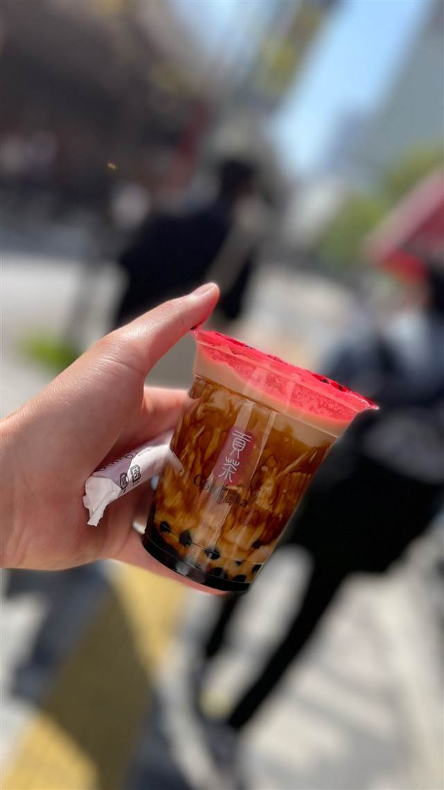

Granja M. Viader
世界初のボトル入りチョコレートミルク「カカオラット」誕生の店
GRANJA M. VIADER
1870年創業、ラバル地区の老舗グランハ（牛乳・菓子を出す伝統カフェ）。1931年に創業者の息子が「世界初のボトル入りチョコレートミルク」とされるカカオラットを考案したことで知られ、現在も5代目一族が営業を続けている。
TRIVIA
へえ、という話
- 世界初のボトル入りチョコレートミルクとされる『カカオラット』はこの店で生まれた
- 創業から5世代、150年以上同じ一族が経営を続けている
| 創業 | 1870年創業 |
|---|---|
| 看板 | カカオラット（ボトル入りチョコレートミルク）、チュロス、ホットチョコレート |
| こだわり | 1931年、創業者の息子ジョアンがハンガリーの酪農見本市視察を経て、世界初とされるボトル入りチョコレートミルク「カカオラット」を開発した |
| 掲載・受賞 | バルセロナ市から「功労商店（emblematic business）」に認定 |
| 場所 | リセウ駅 (L3) Carrer d'en Xuclà 4, 08001 Barcelona, Spain |
| 注意 | ラバル地区にある150年以上続く老舗グランハ（牛乳・軽食を出す伝統的カフェ） |
食べたもの：チュロス
NEARBY
近い店・同じ系統の店
-
 ドリンク 麻布十番駅
ROAR COFFEE 麻布十番店
レインボーラテアートを日本で初めて出した自家焙煎コーヒー店
昼 ～¥999 夜 ～¥999
ドリンク 麻布十番駅
ROAR COFFEE 麻布十番店
レインボーラテアートを日本で初めて出した自家焙煎コーヒー店
昼 ～¥999 夜 ～¥999
-
 ドリンク 原宿（竹下口）
pss‐protein supply stand‐ 原宿店
空気を含ませない真空ミキサーで作るプロテインスムージー
昼 ¥1,000未満 夜 ¥1,000未満
ドリンク 原宿（竹下口）
pss‐protein supply stand‐ 原宿店
空気を含ませない真空ミキサーで作るプロテインスムージー
昼 ¥1,000未満 夜 ¥1,000未満
-
 ドリンク リセウ駅 (L3)
Mercat de la Boqueria
起源は1217年、800年続くバルセロナ最古の市場の生ジュース
ドリンク リセウ駅 (L3)
Mercat de la Boqueria
起源は1217年、800年続くバルセロナ最古の市場の生ジュース
-
 ドリンク 表参道
CHAVATY（チャバティ）
スリランカの茶園で選んだウバ茶のティーソフトクリーム
昼 ～¥999 夜 ～¥999
ドリンク 表参道
CHAVATY（チャバティ）
スリランカの茶園で選んだウバ茶のティーソフトクリーム
昼 ～¥999 夜 ～¥999
-

ドリンク 新宿 貢茶 -
 ドリンク 中目黒駅
Taste AND Sense
自家製レモネードが自慢、朝はカフェ夜はレストランの一軒
ドリンク 中目黒駅
Taste AND Sense
自家製レモネードが自慢、朝はカフェ夜はレストランの一軒